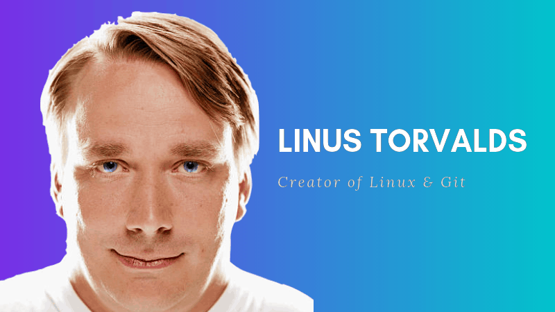

Linus Benedict Torvalds
The man who created Linux & git

Linus Benedict Torvalds, the man who created Linux & git
Torvalds was born in Helsinki, Finland on December 28, 1969.
He is the son of journalists Anna and Nils Torvalds,[10] and the grandson of statistician Leo Törnqvist
and of poet Ole Torvalds. Both of his parents were campus radicals at the University of Helsinki in the 1960s.
His family belongs to the Swedish-speaking minority.
Torvalds was named after Linus Pauling,
the Nobel Prize-winning American chemist, although in the book Rebel Code: Linux and the Open Source Revolution,
Torvalds is quoted as saying, "I think I was named equally for Linus the Peanuts cartoon character",
noting that this makes him half "Nobel Prize-winning chemist" and half "blanket-carrying cartoon character".
Torvalds attended the University of Helsinki between 1988 and 1996,
graduating with a master's degree in computer science from the NODES
research group.[13] His academic career was interrupted after his first year of study
when he joined the Finnish Army Uusimaa brigade, in the summer of 1989,
selecting the 11-month officer training program to fulfill the mandatory military service of Finland.
In the army he held the rank of Second Lieutenant, with the role of a ballistic calculation officer.
Torvalds bought computer science professor Andrew Tanenbaum's book Operating Systems: Design and Implementation,
in which Tanenbaum describes MINIX, an educational stripped-down version of Unix.
In 1990, he resumed his university studies, and was exposed to UNIX for the first time,
in the form of a DEC MicroVAX running ULTRIX.[15] His M.Sc. thesis was titled Linux: A Portable Operating System.
His interest in computers began with a Commodore VIC-20, at the age of 11 in 1981,
initially programming in BASIC but later by directly accessing the 6502 CPU in machine code.
He did not make use of assembly language.[18] After the VIC-20 he purchased a Sinclair QL,
which he modified extensively, especially its operating system.
"Because it was so hard to get software for it in Finland, Linus wrote his own assembler and editor
(in addition to Pac-Man graphics libraries)"[19] for the QL, as well as a few games.
He wrote a Pac-Man clone named Cool Man. On January 5,
1991[22] he purchased an Intel 80386-based clone of IBM PC[23] before receiving his MINIX copy,
which in turn enabled him to begin work on Linux.
If you have time, you should read more about this incredible human being on his Wikipedia entry.